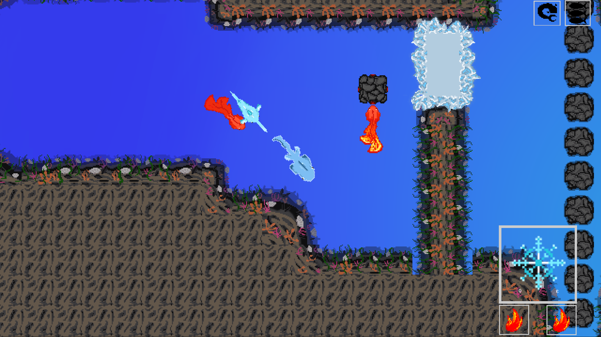

Bubblebound
Description
Bubblebound is a student project that I made with other UC Irvine students in 2024. It was made in a team of around 14 people using the Godot Engine and gdscript in around 8 weeks.
Bubblebound is a puzzle based adventure game, where the player utilizes different types of fish to complete puzzles. There are two types of fish: fire and ice, which can each interact with specific objects in the environment. For example, ice fish can freeze moving objects, and fire fish can melt ice.
The game was released on itch.io in December 2024.
Responsibilites
I was the programming lead on this project, responsible for:
- Organizing and Running Programmer Meetings
- Assigning and Managing Programmer Tasks on Trello
- Managing the Github Repository
- General Bug Fixing
- Code Review
Additionally, I implemented the interactable object system, one of the game's core systems. This involved me creating a customizable component, which other programmers and I could use to add to objects in the engine to make them interactable.
Challenges
This is the first game I made using the Godot game engine and gdscript. This required me to spend a lot of time at the start of the project learning the basics of the engine and how it differs from Unity (a different game engine I'm familiar with). I made extensive use of Godot's documentation to help understand any new concepts and read about unfamiliar classes.
Another challenge I had was managing the team. The team was mostly formed of novice coders. Outside of myself, the team consisted of one freshman, one sophmore, and two high school students. There were varying levels of coding experience.
My job was to take the requests from the design team and break them up into tasks for the coders. I then had to assign the tasks to different members of the teams, based on their coding strenghts and effiency. This included prioritizing tasks to ensure that important tasks would be completed early and shared with the design team.
From this experience, I learned the importance of understanding your team, and how to effectively create and distribute tasks.
Code Samples and Development Pictures
The GitHub for this project is a private repository. However, I have included some of the code I worked on here:
This is the script for the Interactable class. This is a base class that in game interactable objects can extend or add as a child component. It establishes an interface for detecting player mouse movement and interacting with the object using fish.
I designed it to allow other developers to be able to create interactable objects from within the Godot Editor, without having to write scripts for handling player interaction.